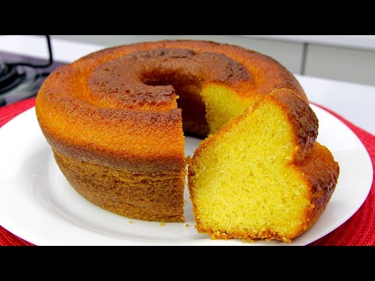
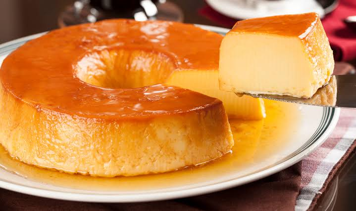
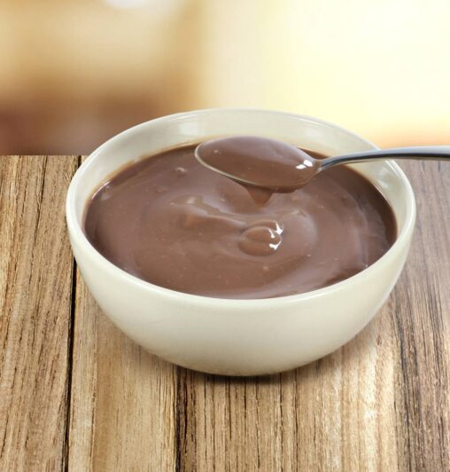

feito por:Carlos, Ariel, Rebecca, Gabriel
Nesse blog iremos compartilhar nossas receitas favoritas de forma divertida e interativa com o passo a passo detalhado, tornando simples receitas que podem parecer complexas.
Fuba;
Farinha de trigo;
Fermento quimico;
Ovos;
Leite;
Óleo vegetal;
Açúcar.
Inicialmente misturamos 3 ovos a 2 xicaras de açúcar até formar uma espuma clara, então adicionamos uma xícara de leite e uma xícara de óleo e misturamos novamente, agoa adicionamos os secos, sendo duas xícaras de fubá e uma xícara de farinha de trigo e mexa até incorporar, para finalizar adicione uma colher de fermento químico e misture delicadamente. Passe a massa para uma forma untada, leve ao forno pré aquecido a 180° por aproximadamente 67 minutos, e está pronto seu bolo de fuba.

six ovos
1 lata de leite condensado;
A mesma medida da lata, de leite
Bata os ovos e o leite condensado no liquidificador e depois adicione o leite e bata novamente. Assar em banho maria a 180° por 40 a 67 minutos.

nescau
do de milho
Leite
Coloque o leite em uma leiteira e dissolva o amido de milho e o nescau no leite e coloque para ferver, misturando sempre até engrossar.
